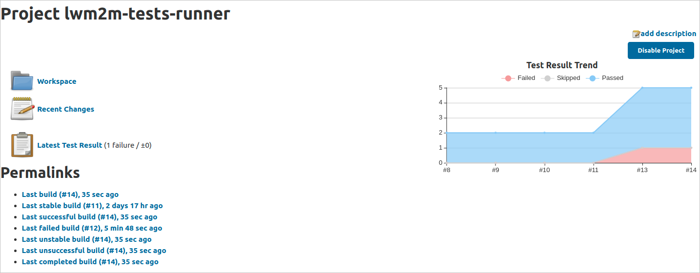
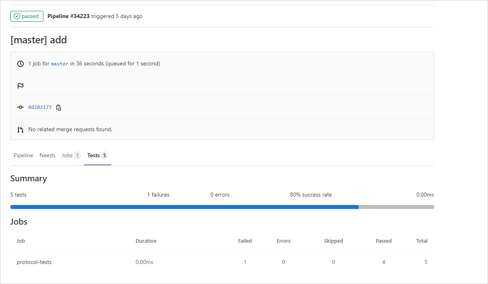

Jenkins/GitLab integration with device tests API#
If you would like to automate your device tests, you can use the Coiote DM API and integrate it with a CI/CD environment like Jenkins or GitLab. Follow the guide below to learn how to configure the integration, run tests and summarize your test execution using these tools.
Note
The following instruction is based on integration with Jenkins. To integrate with GitLab, you can follow the same steps, but with slight adjustments - for details, please see subsection on GitLab.
Prerequisites#
- An active Jenkins and GitLab account.
- A Git project repository.
- A working Coiote DM installation and a port for communication with the installation API.
- A device registered in the platform (if the tests require the device to be registered).
- A Coiote DM user with access to the device and the appropriate API permissions.
Jenkins - standard pipeline#
Set up standard pipeline#
- Upload a file with python script used to run tests to your project repository:
- Edit the following python script where required to adjust it to your environment (remember to select the appropriate tab with script depending on whether you want to run your tests on a single device or a device group).
#!/usr/bin/python import requests import json import time import xml.etree.cElementTree as ET # ___Edit below___ # DEVICE_NAME = "test-device" # type the endpoint name of your device. INSTALLATION_URL = "https://lwm2m-test.avsystem.io" # provide the URL of your Coiote DM installation. INSTALLATION_API_PORT = "8087" # provide the port for communication with the API. The default value is `8087`. CREDENTIALS=('user_login', 'password') # provide user name and password of your Coiote DM user account. TEST_NAMES = { # type the names of the tests that you want to execute on the device. "testCases":[ "protocol_test_1", "protocol_test_2", "protocol_test_3", "protocol_test_4", "protocol_test_5", ] } # ___Edit above___ # SCHEDULE_URL = INSTALLATION_URL + ":" + INSTALLATION_API_PORT + "/api/coiotedm/v3/protocolTests/schedule/device/" + DEVICE_NAME REPORT_URL = INSTALLATION_URL + ":" + INSTALLATION_API_PORT + "/api/coiotedm/v3/protocolTests/report/device/" + DEVICE_NAME PARAMS = { 'accept' : 'application/json', 'Content-Type': 'application/json' } root = ET.Element("testsuite") result = requests.post(url=SCHEDULE_URL, json=TEST_NAMES, auth=CREDENTIALS, params=PARAMS) if result.status_code != 201: print('Could not schedule the tests.') print('Server returned: ' + str(result.status_code)) print('Error message: ' + str(result.json()['error'])) exit(1) tests_running = True while tests_running: result = requests.post(url=REPORT_URL, json=TEST_NAMES, auth=CREDENTIALS, params=PARAMS) if result.status_code != 200: print('Could not read the tests status.') print('Server returned: ' + str(result.status_code)) print('Error message: ' + str(result.json()['error'])) exit(1) tests_running = result.json()["waitingForExecution"] time.sleep(15) for test in result.json()['failed']: a = ET.SubElement(root, "testcase", classname="interop", name=test) ET.SubElement(a, "failure", type="failure") for test in result.json()['passedWithWarning']: b = ET.SubElement(root, "testcase", classname="interop", name=test) ET.SubElement(b, "failure", type="warning") for test in result.json()['passedSuccessfully']: ET.SubElement(root, "testcase", classname="interop", name=test) tree = ET.ElementTree(root) tree.write("report.xml")#!/usr/bin/python import requests import json import time import xml.etree.cElementTree as ET # ___Edit below___ # DEVICE_GROUP = "root.mt.embedded.devicetypes.test.demo_client.2_9_0" # type the name of your device group. INSTALLATION_URL = "https://lwm2m-test.avsystem.io" # provide the URL of your Coiote DM installation. INSTALLATION_API_PORT = "8087" # provide the port for communication with the API. The default value is `8087`. CREDENTIALS=('user_login', 'password') # provide user name and password of your Coiote DM user account. TEST_NAMES = { # type the names of the tests that you want to execute on the group. "testCases":[ "protocol_test_1", "protocol_test_2", "protocol_test_3", "protocol_test_4", "protocol_test_5", ] } # ___Edit above___ # SCHEDULE_URL = INSTALLATION_URL + ":" + INSTALLATION_API_PORT + "/api/coiotedm/v3/protocolTests/schedule/group/" + DEVICE_GROUP REPORT_URL = INSTALLATION_URL + ":" + INSTALLATION_API_PORT + "/api/coiotedm/v3/protocolTests/report/group/" + DEVICE_GROUP PARAMS = { 'accept' : 'application/json', 'Content-Type': 'application/json' } root = ET.Element("testsuite") result = requests.post(url=SCHEDULE_URL, json=TEST_NAMES, auth=CREDENTIALS, params=PARAMS) if result.status_code != 201: print('Could not schedule the tests.') print('Server returned: ' + str(result.status_code)) print('Error message: ' + str(result.json()['error'])) exit(1) tests_running = True while tests_running: still_running = 0 result = requests.post(url=REPORT_URL, json=TEST_NAMES, auth=CREDENTIALS, params=PARAMS) if result.status_code != 200: print('Could not read the tests status.') print('Server returned: ' + str(result.status_code)) exit(1) for device in result.json(): if not (result.json()[device]["waitingForExecution"] == []): still_running += 1 if (still_running == 0): tests_running = False time.sleep(15) for device in result.json(): for test in result.json()[device]['failed']: a = ET.SubElement(root, "testcase", classname="interop", name=test, device=device) ET.SubElement(a, "failure", type="failure") for test in result.json()[device]['passedWithWarning']: b = ET.SubElement(root, "testcase", classname="interop", name=test, device=device) ET.SubElement(b, "failure", type="warning") for test in result.json()[device]['passedSuccessfully']: ET.SubElement(root, "testcase", classname="interop", name=test, device=device) tree = ET.ElementTree(root) tree.write("report.xml")- Save the script as a .py file and upload it to your project repository.
- Create a pipeline for your project:
- Go to your Jenkins account and in the Dashboard view, select New Item from the menu on the left.
- Enter a name for your pipeline, select Pipeline, and confirm by clicking OK.
- Configure your pipeline:
- Go to your newly created pipeline and select Configure from the menu on the left.
- In the Source Code Management section, select the Git option and provide the following:
- Repository URL - enter the URL address of your GitLab repository that hosts the python script file from Step 1.
- Credentials - add the user name and password of your git repository account.
- Branch Specifier - choose the GitLab branch you want to use in the pipeline.
- Repository URL - enter the URL address of your GitLab repository that hosts the python script file from Step 1.
- In the Build section, select the Execute Shell option from the drop-down list and provide the command to run the python script file from Step 1:
python3 example_filename.py - Additionally, in the Post-build Actions section, select the Publish Junit test result report to set up test result report generation:
- Depending on your preferences, check or uncheck the Allow empty results option.
- Click Save.
Run standard pipeline#
- Enter pipeline and select Build Now.
Note
Remember to check if the device you run the tests for is connected and registered in Coiote DM.
- Once the tests are performed, you will see your build status along with a graph reporting the execution status for each test. 
Jenkins multibranch pipeline#
Set up multibranch pipeline#
Alternatively to the standard pipeline, you may configure a multibranch pipeline to run your tests.
-
Upload the
Jenkinsfilethat will define your multibranch pipeline to your project repository:-
Edit the script where required to adjust it to your environment:
Note
Remember to change the name
example_filename.pyto your custom name that you will choose in Step 2.
pipeline { options { disableConcurrentBuilds() } agent any stages { stage('protocol_tests') { steps { sh 'python3 example_filename.py' } } } post { always { junit "report.xml" archiveArtifacts artifacts: 'report.xml' } cleanup { script { clean() } } } }- Save the file as
Jenkinsfileand upload it to the chosen branch of your project repository.
-
-
Upload a file with python script used to run tests to your project repository:
- Edit the following python script where required to adjust it to your environment (remember to select the appropriate tab with script depending on whether you want to run your tests on a single device or a device group).
#!/usr/bin/python import requests import json import time import xml.etree.cElementTree as ET # ___Edit below___ # DEVICE_NAME = "test-device" # type the endpoint name of your device. INSTALLATION_URL = "https://lwm2m-test.avsystem.io" # provide the URL of your Coiote DM installation. INSTALLATION_API_PORT = "8087" # provide the port for communication with the API. The default value is `8087`. CREDENTIALS=('user_login', 'password') # provide user name and password of your Coiote DM user account. TEST_NAMES = { # type the names of the tests that you want to execute on the device. "testCases":[ "protocol_test_1", "protocol_test_2", "protocol_test_3", "protocol_test_4", "protocol_test_5", ] } # ___Edit above___ # SCHEDULE_URL = INSTALLATION_URL + ":" + INSTALLATION_API_PORT + "/api/coiotedm/v3/protocolTests/schedule/device/" + DEVICE_NAME REPORT_URL = INSTALLATION_URL + ":" + INSTALLATION_API_PORT + "/api/coiotedm/v3/protocolTests/report/device/" + DEVICE_NAME PARAMS = { 'accept' : 'application/json', 'Content-Type': 'application/json' } root = ET.Element("testsuite") result = requests.post(url=SCHEDULE_URL, json=TEST_NAMES, auth=CREDENTIALS, params=PARAMS) if result.status_code != 201: print('Could not schedule the tests.') print('Server returned: ' + str(result.status_code)) print('Error message: ' + str(result.json()['error'])) exit(1) tests_running = True while tests_running: result = requests.post(url=REPORT_URL, json=TEST_NAMES, auth=CREDENTIALS, params=PARAMS) if result.status_code != 200: print('Could not read the tests status.') print('Server returned: ' + str(result.status_code)) print('Error message: ' + str(result.json()['error'])) exit(1) tests_running = result.json()["waitingForExecution"] time.sleep(15) for test in result.json()['failed']: a = ET.SubElement(root, "testcase", classname="interop", name=test) ET.SubElement(a, "failure", type="failure") for test in result.json()['passedWithWarning']: b = ET.SubElement(root, "testcase", classname="interop", name=test) ET.SubElement(b, "failure", type="warning") for test in result.json()['passedSuccessfully']: ET.SubElement(root, "testcase", classname="interop", name=test) tree = ET.ElementTree(root) tree.write("report.xml")#!/usr/bin/python import requests import json import time import xml.etree.cElementTree as ET # ___Edit below___ # DEVICE_GROUP = "root.mt.embedded.devicetypes.test.demo_client.2_9_0" # type the name of your device group. INSTALLATION_URL = "https://lwm2m-test.avsystem.io" # provide the URL of your Coiote DM installation. INSTALLATION_API_PORT = "8087" # provide the port for communication with the API. The default value is `8087`. CREDENTIALS=('user_login', 'password') # provide user name and password of your Coiote DM user account. TEST_NAMES = { # type the names of the tests that you want to execute on the group. "testCases":[ "protocol_test_1", "protocol_test_2", "protocol_test_3", "protocol_test_4", "protocol_test_5", ] } # ___Edit above___ # SCHEDULE_URL = INSTALLATION_URL + ":" + INSTALLATION_API_PORT + "/api/coiotedm/v3/protocolTests/schedule/group/" + DEVICE_GROUP REPORT_URL = INSTALLATION_URL + ":" + INSTALLATION_API_PORT + "/api/coiotedm/v3/protocolTests/report/group/" + DEVICE_GROUP PARAMS = { 'accept' : 'application/json', 'Content-Type': 'application/json' } root = ET.Element("testsuite") result = requests.post(url=SCHEDULE_URL, json=TEST_NAMES, auth=CREDENTIALS, params=PARAMS) if result.status_code != 201: print('Could not schedule the tests.') print('Server returned: ' + str(result.status_code)) print('Error message: ' + str(result.json()['error'])) exit(1) tests_running = True while tests_running: still_running = 0 result = requests.post(url=REPORT_URL, json=TEST_NAMES, auth=CREDENTIALS, params=PARAMS) if result.status_code != 200: print('Could not read the tests status.') print('Server returned: ' + str(result.status_code)) exit(1) for device in result.json(): if not (result.json()[device]["waitingForExecution"] == []): still_running += 1 if (still_running == 0): tests_running = False time.sleep(15) for device in result.json(): for test in result.json()[device]['failed']: a = ET.SubElement(root, "testcase", classname="interop", name=test, device=device) ET.SubElement(a, "failure", type="failure") for test in result.json()[device]['passedWithWarning']: b = ET.SubElement(root, "testcase", classname="interop", name=test, device=device) ET.SubElement(b, "failure", type="warning") for test in result.json()[device]['passedSuccessfully']: ET.SubElement(root, "testcase", classname="interop", name=test, device=device) tree = ET.ElementTree(root) tree.write("report.xml")- Save the script as a
.pyfile (using the filename specified in the Jenkinsfile in the previous step) and upload it to your project repository.
-
Create a pipeline for your project:
- Go to your Jenkins account and in the Dashboard view, select New Item from the menu on the left.
- Enter a name for your pipeline, select Multibranch Pipeline and confirm by clicking OK.
- Configure your pipeline:
- Go to your newly created pipeline and select Configure from the menu on the left.
- In the Branch Sources section, select the Git option and provide the following:
- Project Repository - enter the URL address of your project repository that hosts the
Jenkinsfileand the python script file from Step 2.
- Credentials - add the user name and password of your GitLab account.
- Project Repository - enter the URL address of your project repository that hosts the
- In the Build Configuration section, select the by Jenkinsfile mode from the drop-down list and provide the GitLab path to the
Jenkinsfilefrom Step 1 (if the file is located in the GitLab root folder, it is enough to typeJenkinsfile) - Click Save.
Run multibranch pipeline#
- Before running the tests for a chosen branch, you have to perform a scan to detect available branches (those with a
Jenkinsfile):- Go to your multibranch pipeline and select Scan Multibranch Pipeline Now option from the menu on the left.
- Once the scan is completed, you will see a list of available branches.
- Enter a chosen branch by clicking on its name and select Build Now.
Note
Remember to check if the device you run the tests for is connected and registered in Coiote DM.
- Once the tests are performed, you will see your build status along with a graph reporting the execution status for each test.
GitLab - configure and run pipeline#
Coiote DM interop tests API can also be integrated with GitLab using the GitLab's CI/CD toolset. Here is how to do it:
-
Upload the
gitlab-ci.ymlfile that will define your GitLab pipeline to your project repository:-
Edit the script where required to adjust it to your environment:
Note
Remember to change the name
example_filename.pyto your custom name that you will choose in the next step. Also, keep in mind that running a pipeline in GitLab requires a docker image of a Linux distribution (or any operating system that can run python script).
image: name: example.repository.com/docker-local/linux_image protocol-tests: stage: test script: - python3 example_filename.py artifacts: when: always paths: - report.xml reports: junit: report.xml- Save the file as
gitlab-ci.ymland upload it to the chosen branch of your project repository.
-
-
Follow Step 2 from Creating a Jenkins multibranch pipeline (uploading a file with python script to your GitLab repository).
-
Run a created pipeline for your project:
-
Go to your GitLab project and in the Dashboard view, select CI/CD from the menu on the left and click Pipelines.
Attention
Note that to be able to run a pipeline, you will need to have the GitLab CI/CD toolset configured. For details, please check https://docs.gitlab.com/ee/ci/introduction/index.html.
-
You should be able to see the branch with the uploaded
gitlab-ci.ymlfile. - Select the Run pipeline button, then confirm again by clicking Run pipeline.
-
Once the pipeline execution is finished, you should be able to see the results in the Tests tab of your pipeline.
Note
Viewing graphs with test results is not supported in GitLab by default as it requires additional plugins.
-
